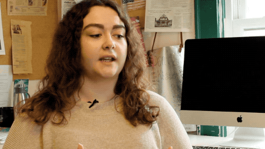
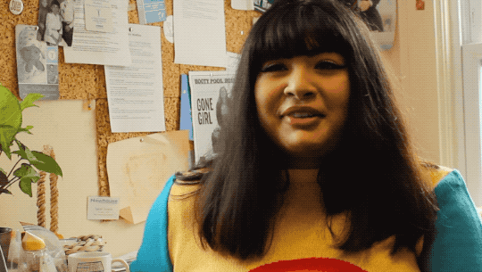
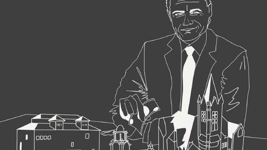
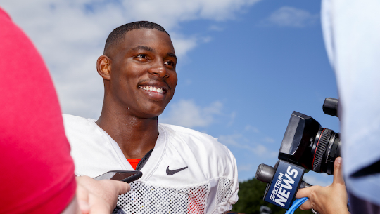
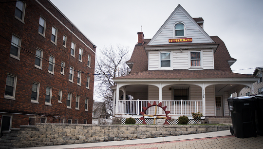
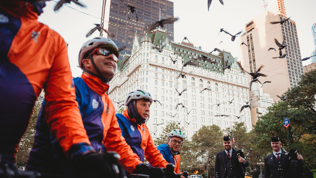

"We're turning the page toward a steadfast future."
The Daily Orange has served the Syracuse community for 116 years. Your donation helps The D.O. keep doing what it does best.
Every dollar supports our mission of producing top-notch local journalism and creating opportunities for students.
Every dollar supports The Daily Orange’s mission for generations to come. Be a part of our next story.
With your donation, we’ll continue to be the record of SU history, in print and online via award-winning stories, photographs and designs. Help preserve the No. 1 free news source in Syracuse. You’ll support:
• Investigative projects
• Sports travel
• Up-to-date equipment
• Web development
Anyone can walk through our doors and get involved. We want to make sure it remains that way. Help make The D.O. an experiential learning opportunity for every student. You’ll support:
• Staff salaries
• Scholarships
• Office supplies
• Rent money for an accessible home
Hear what our alumni have to say about their time at The Daily Orange.
The Fulcrum
“It was like my second home, if not my first home, because I feel like sometimes I spent more time here than where I actually lived.”
The Buffalo News
“When you go out into the ‘real’ world, it feels like you have a leg up. You’ve had a headstart from the experiences and the education that you got here at The D.O.”
Los Angeles Times
“When I was looking at schools, I came to Syracuse because of The Daily Orange. It’s where I wanted to learn.”
The Buffalo News
“The Daily Orange helped shape my worldview in a way that I don’t think any traditional class could have done.”
The Daily Orange was just named the Best College Newspaper of 2019 by the Princeton Review. We consistently earn national recognition from the Associated College Press and the Society of Professional Journalists, among other awards.
Society of Professional Journalists
“It was like my second home, if not my first home, because I feel like sometimes I spent more time here than where I actually lived.”
Society of Professional Journalists
“When you go out into the ‘real’ world, it feels like you have a leg up. You’ve had a headstart from the experiences and the education that you got here at The D.O.””
Society of Professional Journalists
“When I was looking at schools, I came to Syracuse because of The Daily Orange. It’s where I wanted to learn.”
Syracuse Press Club
“The Daily Orange helped shape my worldview in a way that I don’t think any traditional class could have done.”